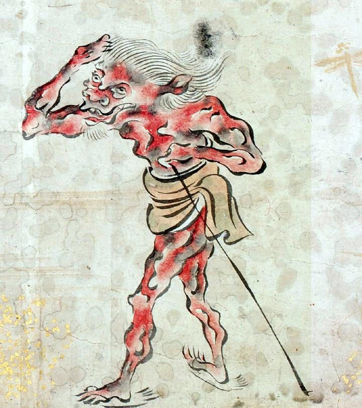

角張った体の赤鬼。白髪を長く伸ばし、顎には白ひげも生やしている。茶色の腰巻きを身につけ、草鞋をはいている。杖のようなものを手に持っている。前方を仰ぎ見ている。
著作者：吉光／出典：親書誌：U426_nichibunken_0057：百鬼ノ図；ヒャッキノズ／日付：2006／資源識別子：U426_nichibunken_0057_0006_0001
Copyright (c)2010- International Research Center for Japanese Studies, Kyoto, Japan. All rights reserved.